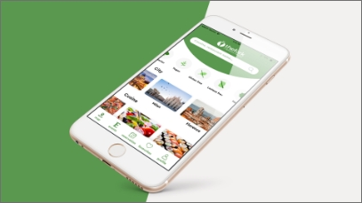
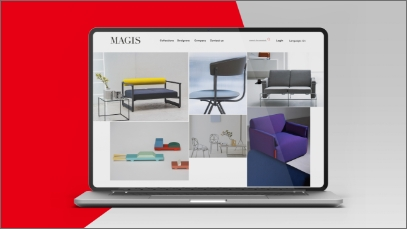

-
 The Fork - App redesign
The Fork is the main online restaurant booking platform. The goal of this project was to redesign the current app, adding new features chosen after careful research.
-
 Magis - Site redesign
Magis is one of the most important companies in the design furniture sector. The goal of this project was to redesign the current website , focusing on the customize tool.